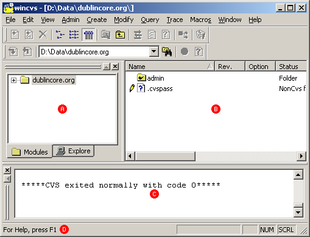

Home
Setting the Preferences
Logging In
Checking out a module
Navigating
Adding files
Committing files
Logging out
Using WinCVS
The latest version of WinCVS can be downloaded at:
http://www.wincvs.org/
The WinCVS interface
Workspace
Remote files
Output
Status Bar

Last updated on March 12, 2003
Questions or improvements? Email Lance Osborne at
osbornel@oclc.org